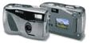
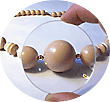
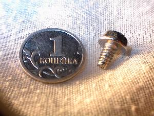
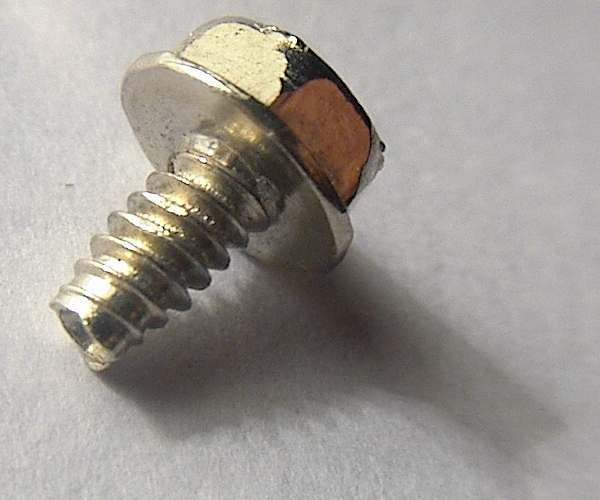
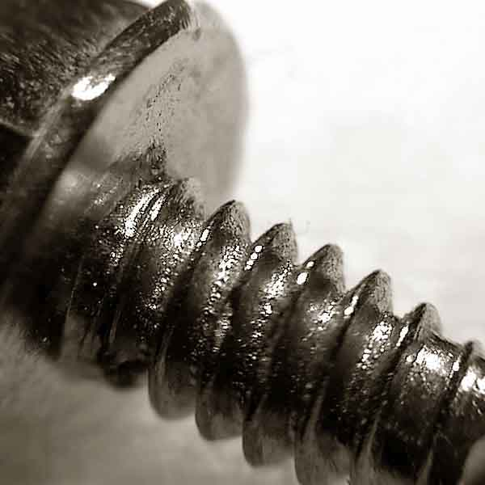
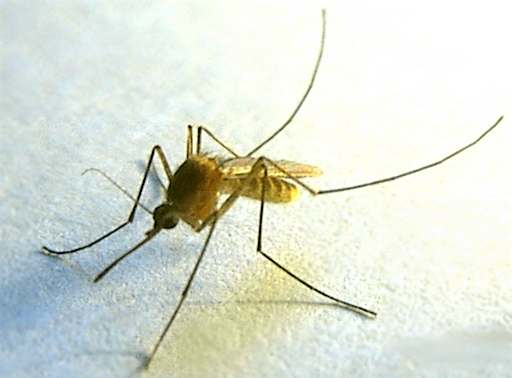

Macro photography with a simple camera

The HP C200 camera doesn't have a special macro lens. So I took this photo through a magnifying glass .
What is it ?

It is a normal screw for computer's cover.

the coin size is 16mm
The stronger the magnifying glass, the larger the screw.

The stronger the magnifying glass, the larger the screw.


the photo is taken through a loupe 7x


The photos above were taken with a camera "HP photosmart C200".
A magnifying glass provides good vignetting for flowers:


The photos below are made by a Nikon CP880 . The camera's minimal distance is 4cm. So sometimes I use a loupe too. The mosquito is taken through a loupe from distance about 2-3cm. The bumblebee is taken without a loupe from distance 8-10cm.